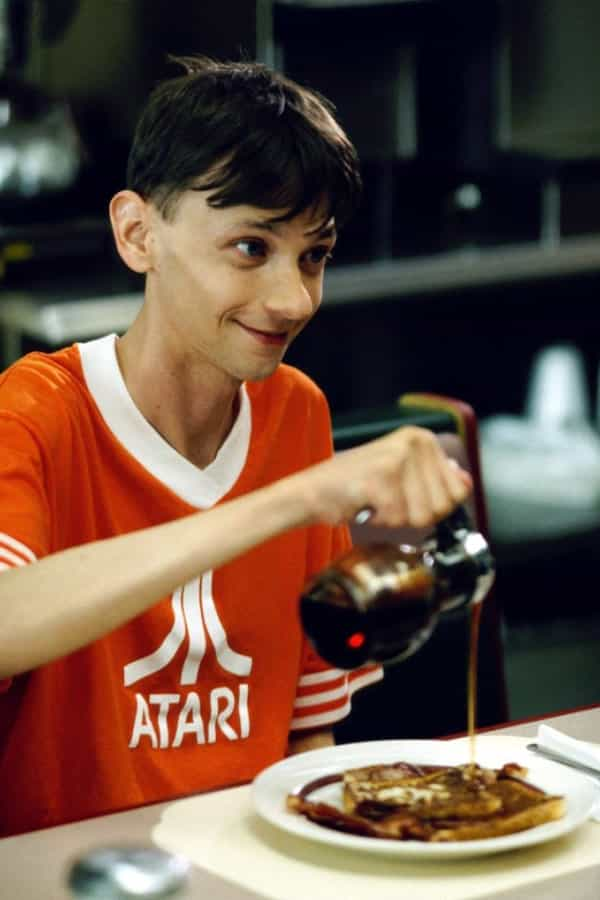
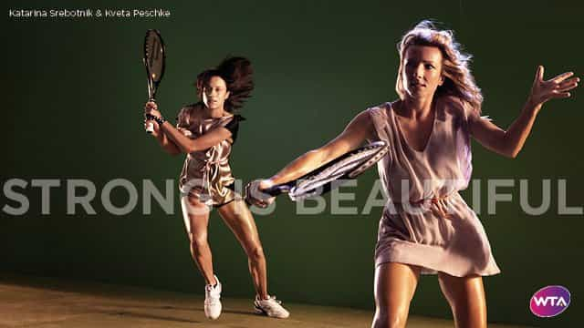

< < < Back
What Women’s Tennis Says About “Equal” Pay – Return Of Kings
Award-winning journalist Matthew Syed recently wrote a compelling article on the rank hypocrisy evident in the tennis equal pay debate.
This snippet from Syed brilliantly sums up the debacle that is “tennis feminism”:
In most sports, they are free to compete against men, on an equal footing. They choose not to take up the invitation, except in a few rare exceptions, such as bowls and equestrianism. This is not supposed to be a trite point, or a chauvinistic one. It is merely to highlight the gall of those who campaign for equal pay. They wish to compete in segregated events; they wish to bar men from competing against them; but when men earn more, they also reserve the right to demand compensation.
Because of shrieks from the Women’s Tennis Association (WTA), the term “equal pay” has been debased to the point of 1984 Newspeak. Equal pay means remuneration for the same work under the same general conditions. Women playing women, in order to avoid playing invariably tennis-superior men, is not the same work, or under the same conditions, as men playing men.
Truly equal pay in tennis would be men and women in the same field. Under the present misinterpretation, female tennis players are afforded a luxury that makes even less sense than a Major League pitcher being paid the same as one in the low minor leagues.
The Biology Argument
To argue that the differing biologies of men and women justifies “equal” pay in tennis is nothing short of laughable. Gender is only one example of how physical endowment manifests itself. Height often makes all the difference in basketball, for example, and how many players of average human height do we remember? Yet no one seriously suggests we form a parallel NBA with equivalent salaries for people standing below six feet. Or one for white people, considering that around 80% of the NBA is black.
The same logic can be applied to almost every other mainstream American sport. The heavy contact and power required in NFL favors male mesomorphs and endomorphs. Where are the calls for a rival, equally rewarded league for ectomorphs, such as the lean and mean DJ Qualls? It would make just as much “equality sense” to pay skinny nerds the same salaries to play NFL as it does to pay female tennis players the same as men.

He wants his own NFL, paid the same as Tom Brady.
As for more sporadically-followed sports, West Africans and their descendants in America and the Caribbean dominate sprinting. So are the Olympics going to create new medal events for whiteys like me who generally run slower and jump lower? Or how about a long-distance event for broad-bodied, ruddy Irishmen like my father to offset the advantages of the skinny Kenyans and Ethiopians? Physical reality is no less present in these cases than the male-female distinction in tennis.
Marketability
Marketability is often thrust forward as a reason for equal prize money at Grand Slams. But this misses the boat on three points. Firstly, WTA ticket numbers are often much lower when tournaments are held independently of or jointly with the male players. Though female players deny it continually, the women’s game unabashedly piggybacks off the men, especially in the Grand Slams where the men’s and women’s events are held simultaneously. For Grand Slam finals, the men’s tickets are routinely more expensive than the women’s. WTA events held separately, such as Bastad in Sweden, have become a joke for their empty stands.
When a women’s US Open final gets slightly more American viewers than the men’s, feminists cheer wildly at the “victory,” ignoring the fact that the women’s final has been held on a Sunday, while the men’s has been on a Monday when people are at work. Oh, and that rather irrelevant point that the very parochial American TV audience is more likely to watch one of their own finalists (Serena Williams) than Europeans like Andy Murray, Roger Federer, Novak Djokovic or Rafael Nadal.
Secondly, marketability has nothing to do with who progresses in a Grand Slam and how well they are paid for that progression. Two 2014 Grand Slam winners, Stanislas Wawrinka and Marin Cilic, are far from the most marketable players on tour. But they still won their respective Opens.
Victoria Azarenka, relative to her achievements, is a rather unpopular player in both the locker room and the fan base. Yet she’s still won two Grand Slams. Similarly, despite regularly bombing out of major tournaments in recent years before the final stages, Ana Ivanovic is still a marketable athlete. And this has more to do with her looks than her recent tennis antecedence.
The third reason is that even the present interest in women’s tennis has largely been generated by propaganda falsely emphasizing the equal skill and entertainment offered by the men’s and women’s games. Mythologies including the cringeworthy Battle of the Sexes, where long-retired 55-year-old Bobby Riggs lost to still-professional Billie Jean King, are used to demonstrate the value of the women’s game without any empirical evidence, let alone the common sense of trying a non-gendered field.
Modern exhortations, such as the “Strong is Beautiful” campaign featuring Sharapova and Serena Williams, impliedly seek to justify equal pay without acknowledging that the girls simply aren’t strong enough to compete with the men.

Strong is beautiful? So play the men for your equal pay!
The WTA’s message can thus be summarized as “We refuse to play the men, but we insist on equal pay.”
Focusing on the Physical Appearance of Players
The WTA and feminists commenting on tennis implicitly or explicitly decry the emphasis on female players’ looks. And I can understand this. They’re sportspeople, first and foremost. But if we remove a player’s appearance from the equation and rely only on skill for our observations, it’s obvious the women’s game is inferior to the men’s. And, again, we’re paying both equally despite the disparity.
The dilemma is that the WTA demands we focus on skill levels, while happily lapping up the attention generated by the beautiful female players. It comes as no surprise that Anna Kournikova was the most famous player of the 90s in terms of wider “cultural” impact, despite never winning a regular singles title, let alone a singles Grand Slam.
Zero singles titles and the most well-known female singles player of all time. I wonder why?
Moreover, the single biggest drawcard to the women’s side of tennis is the more attractive players. Serena Williams is eclipsed by the less dominant (and far more attractive) Maria Sharapova as the most recognizable female player currently. Even Ana Ivanovic, whose career sputtered after reaching Grand Slam glory some years ago, is still one of the most popular players on tour, far beyond her actual on-court achievements.
Sabine Lisicki, a Wimbledon finalist in 2013, is far more well-known than the less aesthetically pleasing and now retired Marion Bartoli, despite Bartoli beating Lisicki for that title and being on tour far longer before she recently retired. The same goes for the girl-next-door looks of Eugenie Bouchard versus the severe homeliness of French Open winner Francesca Schiavone.
Whilst talking all day about the talents of their players, the WTA seems to ignore that much of the brand recognition of female players comes from their skimpy court outfits and ubiquitous Sports Illustrated bikini-at-the-beach appearances. It still needs this sexuality, though, because it deflects attention from the inherent ability gap between male and female players. And often the public talks more about the garishness of a female player’s outfit than the spectacle on the court.
Applying WTA Exceptionalism to Wider Society
The WTA is arguing not for equality but rather a self-serving exceptionalism. Female tennis players simply cannot compete with the men. As Syed points out, women want the God-given right to operate in a separate field from men, who would easily beat them, but they simultaneously insist on equal rewards, recognition, and exposure.
The logical extension of this WTA gender-norming is obvious. If someone has a naturally lower intelligence, just as sportswomen have generally lower abilities than sportsmen, why shouldn’t they be awarded the same job, despite lower intellectual and professional achievement, as a more qualified person?
Likewise, if the average college entrance scores of men continue to be several points lower than women, shouldn’t they be offered an equal reward (entry to their favored degree) at a threshold several points lower than their female counterparts? This is no different from “equal pay” in tennis, and makes more sense given that far more people go to university than play professional tennis, which involves a very short career.
Moving onto crime, men have much greater levels of testosterone, scientifically linked to impulsivity and aggression, than women. So why not have a lesser standard of criminality for male physical aggression, just as post-natal women are given excuses when they otherwise murder their newborns? This all takes into account biology, just as “equal” pay does in tennis.
Logic-Free Zone
One will notice that I have not even raised the specter of the best-of-five (men’s) versus best-of-three set (women’s) inequality in tennis. The holes in the “equal” pay fraud are so numerous and all-encompassing that I do not even need to raise the most obvious argument against the present state of affairs.
Women’s tennis uses the same self-deceit to justify equal pay for unequal circumstances as wider feminism uses for all manner of histrionic and self-serving demands. Nonetheless, nonconformity exists, as the Syed article highlights. The best recipe for refuting WTA illogicality, like any other form, is to throw the equality argument back at the SJWs and dismantle it piece by piece.
Read More: How To Make Women Equal To Men


{kind=link}